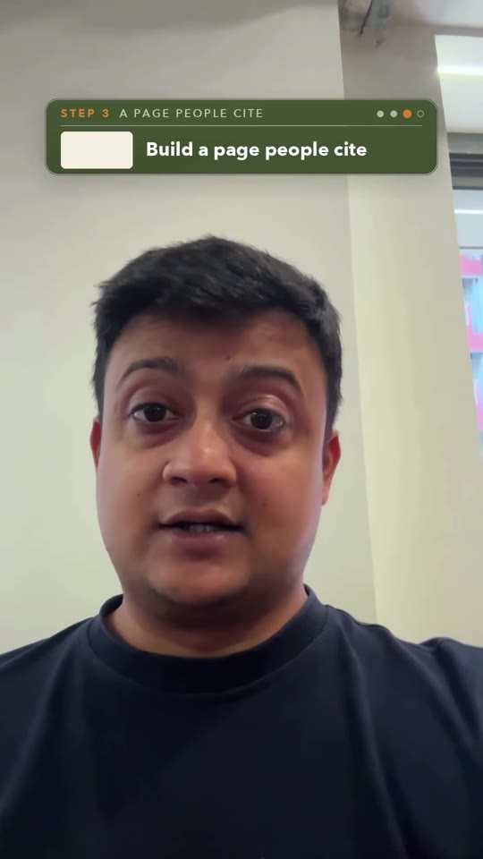
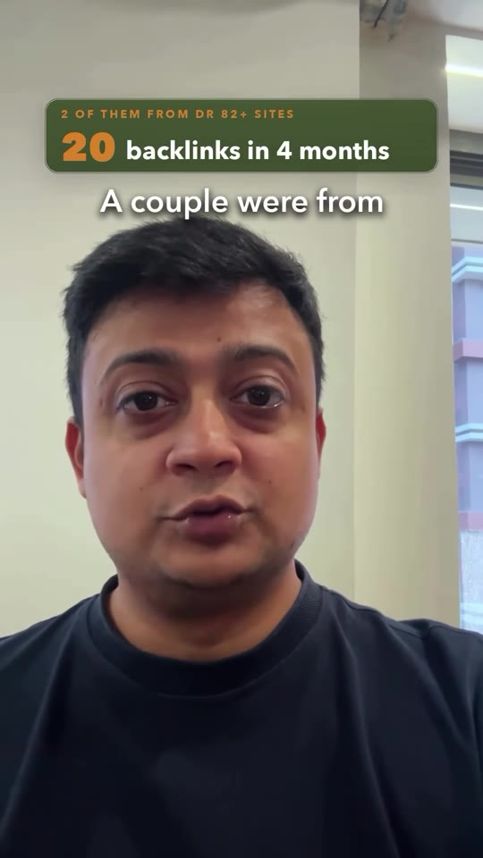
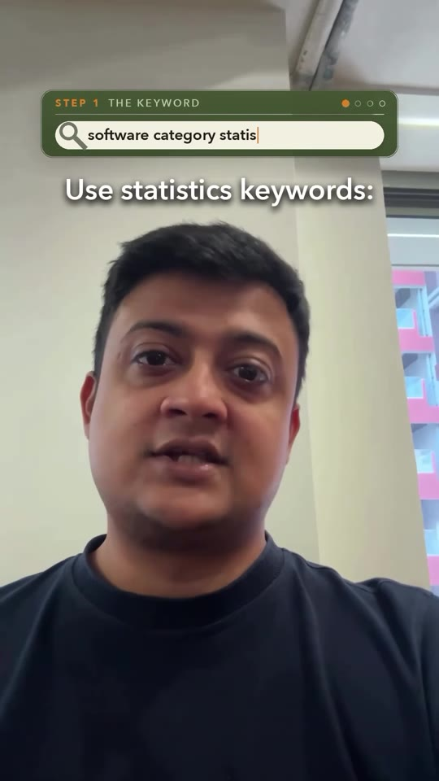
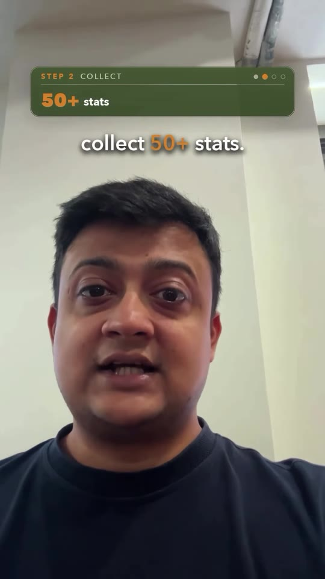
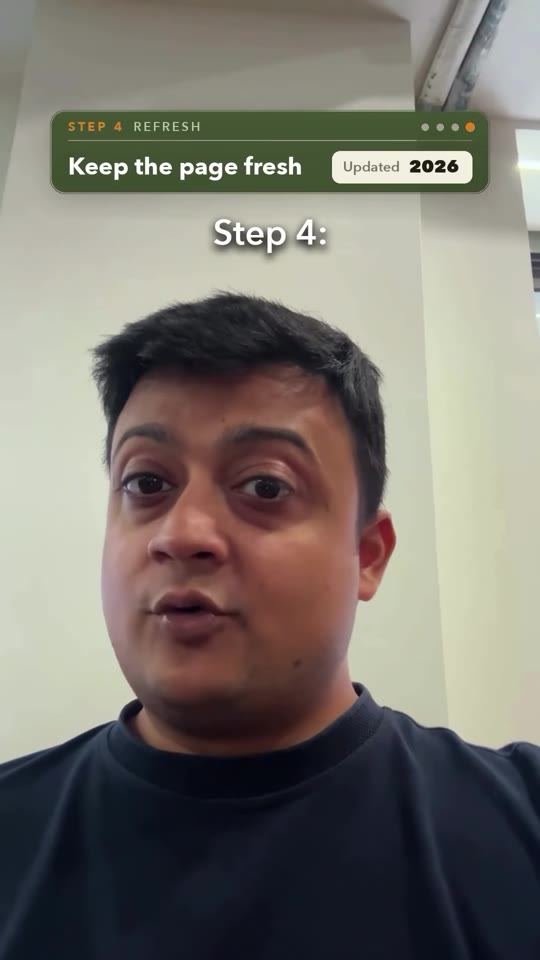

Marketing · SEO-Backlinks
Passive Link Building: Earning DR 82+ Editorial Backlinks via Original Statistics Pages
A 4-step data-driven SEO playbook that generated 20 high-authority backlinks in 4 months (including two domains rated DR 82+) without cold outreach. By skipping crowded commercial affiliate terms and publishing meticulously sourced industry statistics compiled from government reports and SEC filings, websites position themselves as the primary citation source for journalists, authors, and AI research models searching for data under tight deadlines.

Steps / Workflow
- Target Statistics Keywords (Skip “Best Software”): Ignore saturated commercial intent terms like “best CRM software”. Target high-citation statistical queries structured as:
[Industry / Software Category] + statistics + [Target Year](e.g., “India digital payments statistics 2026”). - Aggregate 50+ Stats Exclusively from Primary Sources:
- Pull numbers directly from official government reports (e.g., RBI, Ministry of Finance), regulatory filings, SEC annual reports, and audited industry papers.
- Banned practice: Never copy stats from secondary affiliate roundups (e.g., Forbes Advisor or HubSpot lists), which contain recycled, stale, or misrepresented data.
- Architect for Instant Citation:
- Executive summary: Place 10–12 one-sentence key statistics right at the top for immediate copy-pasting.
- Question headings: Format subheadings as common journalistic queries (e.g., “What is the projected market size of digital payments in India?”) followed immediately by a single-sentence bolded answer.
- Granular citations: Accompany every single metric with its exact source name, publication date, and outbound link to build unquestionable credibility.
- Maintain Annual Freshness: Update numbers, timestamps, and target year keywords every year (e.g., 2026 → 2027) so the page continually ranks at the top of organic search and LLM training corpora.
- Harvest Passive Inbound Citations: Journalists and bloggers on deadline cite the page as their reference link, frequently emailing the webmaster to notify them of inclusion in major national publications.
Framework Walkthrough




Verbatim Breakdown
| Timestamp | Screen / Source | Verbatim Content |
|---|---|---|
00:00 |
On-screen card | CASE STUDY 20 backlinks in 4 months |
00:06 |
On-screen card | 2 OF THEM FROM DR 82+ SITES 20 backlinks in 4 months DR 82+ sites. |
00:15 |
Spoken (audio) | “Every journalist has one problem statement... when they write content, they research online, on ChatGPT, on Google. And they want to quote a number no one’s heard, jaise market kitne crore ka hai, kitne percentage se kya grow hua hai.” |
00:33 |
On-screen badge | THE TRICK Be the source the number comes from |
00:39 |
On-screen card | STEP 1 • THE KEYWORD Skip best software. Use statistics keywords: software category statistics 2026 or 2027. Example: India digital payments statistics 2026 |
00:56 |
On-screen card | STEP 2 • COLLECT 50+ stats Only original sources: Govt reports, filings, research (Copied roundups won’t help) |
01:09 |
On-screen card | STEP 3 • A PAGE PEOPLE CITE • 10-12 one-line key stats • Headings as questions, answers in one line • A source on every stat (source, date and link) |
01:22 |
On-screen card | STEP 4 • REFRESH Keep the page fresh Updated 2026 → Updated 2027 |
01:28 |
On-screen badge | THEN Bloggers • Journalists • ChatGPT → You |
01:33 |
On-screen notification | Journalist • now Re: your stats page We want to give you a backlink, since we’re quoting you as the source. |
(caption) |
Post Caption | So I was speaking to somebody over the weekend, and I learned his way of getting backlinks, which is by finding out and quoting interesting statistics on his website, and then journalists reaching out to him and giving him backlinks for free. That turned out to be one of the largest backlink pools on his website, and two of the websites were more than 82 domain authority websites. Obviously it was all related to journalism, but in this video I share the whole view about how he is doing it, a step-by-step process. This video is really valuable for all those people who are experimenting with data and have a website wherein they publish those data. All the startup founders, all the website creators, all the SEO agencies. In fact, if there is somebody who has a small website, who is a small business owner and is working around ways to figure out how to get backlinks on a small website, this is one of the most interesting ways to go about it without even spending a huge amount of time on other things, rather than focusing on their own business and then finding out those numbers to put on the website. |
Tools & Tactics
- Keyword Research: Ahrefs / Semrush to identify zero-to-low difficulty queries matching
[niche] + "statistics". - Data Extraction: SEC EDGAR filings, Reserve Bank of India / Census / Statista primary dossiers, annual investor presentations.
- Schema Markup: Implement
DatasetandFAQPagestructured data markup in JSON-LD on the statistics page to facilitate rich snippets in Google Search and ingestion by LLM retrieval engines (Perplexity, ChatGPT, Claude).
Try This
- Pick one core service or software vertical your business specializes in (e.g. B2B SaaS onboarding or Indian quick-commerce).
- Search Google for
[vertical] statistics 2026and review the top 3 ranking pages. Note how many citations point to 3rd-party blogs rather than original reports. - Spend 4 hours reviewing 5 official government whitepapers or public investor decks in that niche, extracting 50 distinct data points with exact page numbers and dates.
- Publish a dedicated resource page titled “50+ [Vertical] Statistics & Benchmarks (2026 Edition)” following the Step 3 structure.
Open Questions
- AI Search citations: Modern generative search engines (Google AI Overviews, Perplexity) frequently synthesize facts without always generating a clickable editorial backlink; monitoring whether visits from LLMs convert into branded search impressions or direct traffic requires Google Search Console tracking.